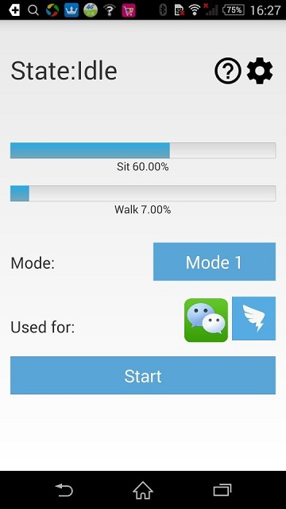

RiskCog
Application Intrduction
Application Intrduction
RiskCog is an Android application that enforces user authentication with the data collected from motion sensors (acceleration sensor, gyroscope sensor, and gravity sensor). Our app is based on a learning-based approach and train the model to depict the authorized device owner by the manner of handling the device. After testing, this application works well that can determining the authorized users from “suspicious users” in high accuracy. Our system is deployed in a client-server model. The client app is packaged as a APK file in our submission, and the server, including the learning framework, user data management is deployed on a Azure Virtual Machine. Right now our application supports all Android phones that the system is Android 4.0 and above version, meanwhile the phones should also provide complete sensors for collecting data, otherwise the application will give a prompt. To sum up, the requirements of our application’s deployment are:
● Internet connection
● Android smartphone with OS version 4.0 and touch screen capability
● Android smartphone with acceleration sensor, gyroscope sensor, and gravity sensor
Download Link：SensorDemo-release.apk
Use this command line for installation: “adb install path-to-apk”. You need to install the toolbox Android Debug Bridge to deploy the app on device [https://developer.android.com/studio/command-line/adb.html] During the installation, if the phone is currently not enabled to install the unknown source software, please go to settings to enable this option. (Fig 1)
Fig.1 Enable installation from unknown sourceThis application mainly contains three different phases: Training Phase, Optimizing Phase and Detecting Phase. The training phase mainly includes collecting data from motion sensors and uploading the data to the server on the Azure cloud platform for model training. This model will be checked so as to decide “Suspicious Users” and authorized users, and enforce user authentication. During this period, users can change password (Check details in 4.b), turn on/off the background training/optimizing/detecting service (Check details in 5.c), and check user guide. Users can also view training progress from the progress bars (Check details in 6.b). The optimizing phase starts after training phase, after 100 files collected in sitting section and 100 files collected in walking section. We should note that we have two separate models for user’s motion states (sitting and walking). During this period, the server will continuously collecting data from the phone and optimizing the model (Check details in 7). And it will move on to detecting phase. The detecting phase will start after optimizing phase, in this period if the collected data has a slightly difference with the trained model, the application will generate a dialog to warn the user of a “Suspicious User” usage, and user has to input their password to continue the application they are using (Check details in 8.a). Meanwhile, if there are five times of false alarms (determining authorized user as “Suspicious User”), the application will switch back to optimizing phase to optimize the model.(Check details in 8.b)
a. Initial Password Setting
After entering the application, set the initial password in the interface shown below in fig 2, this is the detecting phase password and will be the only password to unlock the account after a suspicious user is detected, Please keep it at a safe place. This password is also editable in the main interface.
Fig. 2. Setting the password
b. Change Password
Click on the “setting” icon in the main interface (fig 3, fig 4) to change password, type in your old password, new password, and repeat new password accordingly to finish the changing password process.
Fig. 3. Button to change password Fig. 4. Change the passworda. Instruction of Main Interface
The main interface mainly includes following parts (fig. 5)：
1. Current State;
2. Check User Guide;
3. Password Changing;
4. Applications in Protecting;
5. Training Progress;
6. Start/Stop button;
7. Mode Button.
Fig. 5. Main user interface interpretation
1. Current State: This is used for displaying current state of the application, state consists of three different values for three phases, check details in 6, 7, 8.
Idle Current service is stopped by user, for details please check in 5.c
training Training phase: The model is still under training
optimizing Optimizing phase: Model exists, now optimizing it for future detecting
detecting Detecting phase: Model exists, protecting the phone
2. Check User Guide: Click to check the user guide, check details in 5.b.
3. Password Changing: Click to change the password. check details in 4.b.
4. Applications in Protecting: This indicates the applications that RiskCog is protecting, currently contains Facebook, Outlook, Gmail and YouTube. It is easily to customize any apps to protect. We include the four popular applications for the purpose of demonstration.
5. Training Progress: This is the place user can check if their model progress, 100% means model exists. check details in 6.b.
6. Start/Stop button: This button is used for start/stop the service, they can be used in training phase, optimizing phase and detecting phase. check details in 5.c.
7. Mode button: This is used to switch the data source of your phone, please see Fig. 7 for detail.
b. Check User Guide
Click on the button in fig. 6 will open the user guide.(Fig. 7)
Fig. 6. Button to check user guide
Fig. 7. User guide
c. Start/Stop Button
For all three phases (training, optimizing, detecting), user can always using this Start/Stop button to resume or pause the service, the state will switching between “Idle” and current phase to indicates if the service is started or not. (fig. 8, fig. 9).
Fig. 8. Start the service

Fig. 9. Stop the servicea. Details of Training Phase
In our initial setup, users need 100 files in sitting section and 100 files in walking section to complete the modeling progress. Thus, this phase will require users to use the protected applications(Currently Facebook, Outlook, Gmail and YouTube) in their daily usage, including states of sitting and walking. It is also important to note that the files with less than 100 points data will not be uploaded to the server to avoid a significant impact on model. And the walking section will also take a long time for training, thus if users need to accelerate the training process to verify the accuracy of the application, they can intentionally using the protected applications during walking state, which will generate the model more quick.
b. Instruction of Progress Bar
During the training period, the progress bar in fig. 10 will indicate how many data have been collected in two motion states, sitting and walking, respectively. We should note that the optimization and detecting phrases will only start after enough data are collected for both of the two motion states.
Fig. 10. Training PhaseThe optimizing phase starts slightly after the training phase (fig. 11). During this period, the model already exists based on the training files. To get a more accurate result, RiskCog will continuously collecting data from mobile sensors and optimizing the model. As the data uploaded to the server, it will starts to calculate the accuracy of the data from the existed model, once the sit_accuracy and walk_accuracy both reach 0.85 (Previous Setup) the application will move forward to detecting phase. Also, during the detecting period, if there are five times of false alarms (determining the actual user as “Suspicious User”), the application will switch back to optimizing phase to optimize the model in order to get a more accurate detection. For details please check 8.b.
Fig. 11. Optimizing Phasea. Suspicious User Warning
If the misalignment between the model and the data collected from motion sensors is detected in the detecting phase, a notification saying “Suspicious User” will pop up, and asking for the initial password (fig. 12), user verification (fig. 13), and disable verification (fig. 14).
Fig. 12. Suspicious user
Fig. 13. Select usage
Fig. 14. Disable the detection
User verification in fig 7.2 is for sustain training mode, the accuracy of the software will continuously improve during this process.
b. Return to Optimizing Phase
If user select for five times of “self” usage in the dialog, that means the application has five times of false alarm, thus it will generate a dialog to remind the user of this situation, and will switch back to optimizing phase to optimize the model for a better accuracy. (fig. 15, fig. 16)
Fig. 15 Detecting Phase
Fig. 16 Reminder